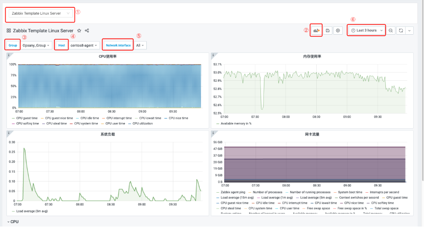
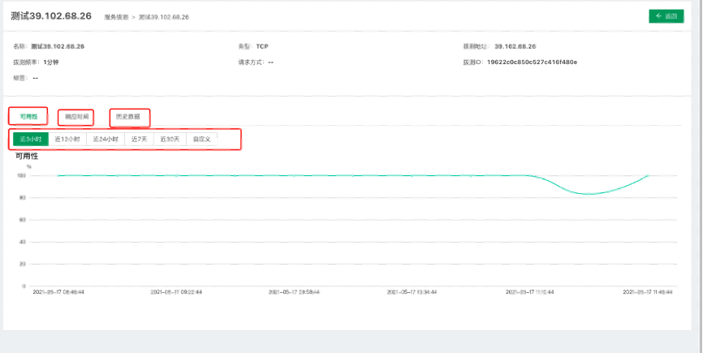

监控平台¶
监控平台是OpsAny推出的一款监控的产品，具有丰富的数据采集能力，致力于满足不同的监控场景需求和能力，提高监控的及时性、准确性、智能性，可以保证业务的正常运行。

- 闭环：整合CMDB，事件中心，日志平台，作业平台，工单等，可以完善监控的智能化。
- 告警：策略可以满足单机，单实例，集群，多维度等告警需求。
监控大屏¶
监控大屏主要通过仪表盘的形式实现业务运行状况的监控，主要利用zabbix和grafana两种核心工具。支持用户自定义监控大屏，设置告警阈值等功能。监控可以从不同的分析角度来衡量标准的制定，比如指标，维度。
Dashboard¶
Dashboard的主要作用是帮助用户可以对数据可视化监控，更直观的监控指定的指标和维度。

- 点击左上角下拉列表，选择不同的dashboard展示。
- 新建视图，可以先选择数据，也可以先选择视图。
- 可以根据分组展示dashboard的内容。
- 可以根据主机展示dashboard的内容。
- 可以根据不同的网络分别展示内容。
- 用户可以根据时间的范围来查看具体的内容。
Dashboard列表¶
Dashboard列表主要作用是监控模板进行分组，方便用户管理主机。

- 点击新建dashboard，用户进入新建dashboard界面。

点击add new panel，进入创建panel界面。

① 选择数据来源，监控平台默认使用zabbix作为监控数据的来源。
② 选择需要监控的数据对象，以及监控频率等字段。
③ 经过以上两种选择可以出现一个监控dashboard。
- 点击新建文件夹

文件夹主要作用是方便用户管理监控模板，对相关模板进行分组整合。
- 点击模板名称，可以查看模板监控的详细信息。
- 点击移动按钮，可以对当前模块进行分组移动。
监控对象¶
监控对象的主要是围绕主机的所有数据。主机数据的来源是基于管控平台的主机数据，如果管控平台没有主机的时候，主机监控的数据也是空的。所以需要先在管控平台添加主机。
主机监控¶
主机监控主要是查看对应主机的相关监控对象和数据。

- 此处分组主要是依据管控平台的主机分组，方便用户管理主机资源。
- 添加主机会跳转到管控平台添加主机，然后进行agent的安装，可以实现监控主机的添加。
- 点击配置按钮，可以为监控的目标主机添加标记、变量和监控模板。

- 点击查看详情。

- 可以关闭和启动目标主机的监控操作。
服务拨测¶
服务拨测是探测服务可用性的监控方式，通过拨测节点对目标服务进行周期性探测，查看可用性和响应时间来度量服务的状态。
服务拨测通过模拟用户的操作，实现从被动监控到主动发现的运维方式转变，当前支持的拨测协议有HTTP，TCP，ICMP。

- 支持用户能够对拨测地址进行分组，方便用户对多个拨测对象进行管理。
- 点击新建服务拨测，进入新建服务拨测界面。
- 点击拨测名称，可以查看拨测的详情信息和历史数据。

- 点击编辑可以对目标拨测进行修改。
- 点击停用或者启用，可以控制目标拨测是否使用。
- 点击删除按钮，可以删除目标拨测地址。
新建服务拨测主要分为三种，HTTP、TCP、ICMP，以下介绍三种拨测地址的创建。
配置主流程：
(1) 配置拨测节点
(2) 新建拨测任务
(3) 选择协议
(4) 填写目标地址
(5) 设置策略
(6) 查看拨测任务
- HTTP

- TCP

- ICMP

衡量服务的指标：可用率，响应时间，期望响应码，期望响应内容。
可用率：一个拨测周期内，正常的节点数/总拨测节点数。
响应时间：请求耗时，超时设置。
期望响应码：200 3xx 4xx 5xx。
期望响应内容：响应内容是否匹配。
平台设置¶
系统设置¶
监控平台大屏展示功能基于grafana第三方组件，监控平台部署时会内置grafana服务，并保存grafana配置。